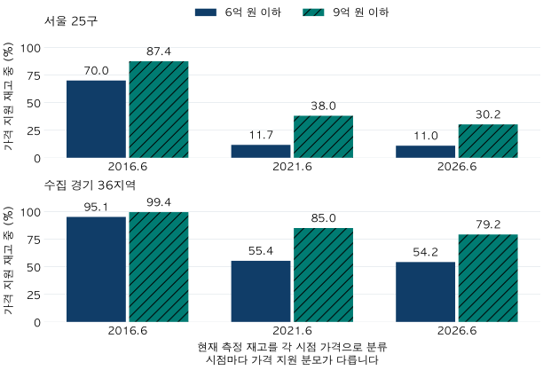

첫 집의 예산 · 가격 문턱과 재고
6억 이하 아파트는 얼마나 있을까? 서울·경기 재고와 매물의 차이
2026년 6월 서울·수집 경기의 6억·9억 원 이하 재고를 모형 가격으로 분류했습니다. 가격 지원 분모와 누락, 과거 비교·가격 민감도를 통해 실제 매물 수와의 차이를 확인합니다.
분석 기간 · 2026-06-25 가격 · 과거 비교 2016·2021년 | 보유 자료 스냅샷 생성 · 가격·재고 자료 2026-10-04 · 집계 2026-10-10
6억 원 이하 아파트가 줄었다는 말을 들으면 지금 고를 수 있는 집이 몇 채인지 궁금해집니다. 2026년 6월 25일 모형 가격으로 분류한 재고는 서울 127,971세대, 수집 경기 1,171,922세대입니다. 각각 가격을 평가할 수 있는 재고의 11.0%, 54.2%입니다. 이 숫자는 현재 매물 수가 아닙니다. 어느 집의 가격과 세대수가 확인됐는지부터 함께 봐야 합니다.
‘6억 이하 아파트’는 무엇을 센 숫자인가요?
거래 건수는 일정 기간 계약된 횟수, 재고는 확인된 주택 수, 매물은 현재 판매 대상으로 나온 집입니다. 한 집이 여러 번 거래될 수도 있고, 한 번도 거래되지 않은 집도 재고에 들어갑니다. 이 글에는 현재 매물 목록이나 매도 의사 정보가 없습니다.
기본가격은 같은 단지의 전용면적을 정수 평수로 묶은 면적형별 모형 가격입니다. 전용㎡를 3.3058로 나눈 뒤 반올림한 면적형의 기준 주택을 사용합니다. 면적형마다 가격을 먼저 6억·9억 원과 비교한 뒤 실제 확인한 세대수를 합합니다. 단지 평균가격이 6억 원 이하라는 이유로 단지 전체를 세지는 않습니다. 경계 가격은 포함하고, 반올림 전 금액으로 판정합니다.
가령 가상 예시로 한 단지에 5억 원짜리 면적형 100세대와 8억 원짜리 면적형 300세대가 있다면, 6억 원 이하 재고는 100세대입니다. 두 가격을 먼저 평균내거나 거래가 많은 면적형의 비중으로 나머지 세대수를 채우면 다른 질문에 답하게 됩니다. 실제 거래된 집의 모습은 서울 예산별 거래 주택에서 따로 확인할 수 있습니다.
서울 127,971세대의 분모는 무엇인가요?
서울의 알려진 단지 총세대수는 1,673,122세대입니다. 이 중 면적별 세대수가 연결된 재고는 1,349,011세대이며, 기준 시점의 가격 지원 조건을 통과한 재고는 1,165,815세대입니다. 6억 원 이하 비중 11.0%는 마지막 분모로 계산합니다.
| 지역 | 총세대 확인 | 면적 확인 | 가격 지원 | 면적 미연결 | 가격 미지원 | 총세대 미상 단지 |
|---|---|---|---|---|---|---|
| 서울 25구 | 1,673,122 | 1,349,011 | 1,165,815 | 324,111 | 183,196 | 562 |
| 수집 경기 36지역 | 2,550,507 | 2,328,527 | 2,161,128 | 221,980 | 167,399 | 706 |
가격 지원률은 면적 확인 재고를 분모로 서울 86.4%, 수집 경기 92.8%입니다. 면적 미연결과 가격 미지원은 서로 다른 공백입니다. 총세대수도 모르는 서울 562단지·수집 경기 706단지는 수량 분모 밖에 있습니다. 따라서 알려진 총세대수조차 전체 시장의 완전한 전수조사라고 할 수 없습니다.
가격 미지원 집을 0원이나 6억 원 초과로 처리하지 않습니다. 오래된 근거, 초기 추정, 가격 자체의 부재 등이 포함됩니다. 누락이 특정 지역·작은 단지·드문 면적에 몰리면 지원 재고의 비중과 전체 시장의 비중은 달라질 수 있습니다.
10년 전과 비교하면 예산 이하 재고가 줄었나요?
서울의 6억 원 이하 비중은 2016년 6월 70.0%, 2021년 6월 11.7%, 2026년 6월 11.0%입니다. 수집 경기의 같은 비중은 95.1%, 55.4%, 54.2%입니다. 다만 이는 현재 측정 재고를 각 시점 가격으로 분류한 분포이며, 당시 존재했던 전체 주택 수나 같은 집이 경계를 넘어간 비율은 아닙니다.

| 가격 기준일 | 가격 지원 | 6억 이하 | 지원 중 비중 | 9억 이하 | 지원 중 비중 |
|---|---|---|---|---|---|
| 2016-06-30 | 1,033,210 | 722,943 | 70.0% | 902,908 | 87.4% |
| 2021-06-24 | 1,024,409 | 119,964 | 11.7% | 389,692 | 38.0% |
| 2026-06-25 | 1,165,815 | 127,971 | 11.0% | 352,255 | 30.2% |
| 가격 기준일 | 가격 지원 | 6억 이하 | 지원 중 비중 | 9억 이하 | 지원 중 비중 |
|---|---|---|---|---|---|
| 2016-06-30 | 1,524,345 | 1,449,761 | 95.1% | 1,515,651 | 99.4% |
| 2021-06-24 | 1,902,298 | 1,053,281 | 55.4% | 1,617,206 | 85.0% |
| 2026-06-25 | 2,161,128 | 1,171,922 | 54.2% | 1,711,799 | 79.2% |
서울의 6억 원 이하 수량은 2021년 119,964세대에서 2026년 127,971세대로 늘었지만, 지원 재고 중 비중은 낮아졌습니다. 분모도 1,024,409세대에서 1,165,815세대로 달라졌기 때문입니다. 수량의 증감과 비중의 방향을 구분해야 합니다. 새로 지어진 집, 가격 지원 여부, 현재 자료의 누락이 함께 영향을 줍니다.
두 시점 모두 가격을 평가할 수 있는 동일 단지·면적형 재고도 확인했습니다. 그러나 일부 이동 구간이 공개 최소 단지 수에 못 미쳐, 겹치는 예산별 수량과 이동 수량을 함께 숨겼습니다. 아래는 공통지원 분모만 보여 줍니다. 미공개를 ‘이동 없음’으로 읽거나 위의 분포 차이로 대체하지 마세요.
두 시점 공통 재고의 지원 범위
| 지역 · 비교 기간 | 공통지원 세대 | 예산별 수량 |
|---|---|---|
| 서울 25구 · 2016-06→2026-06 | 923,310 | 두 문턱·이동 수량 공동 미공개 |
| 서울 25구 · 2021-06→2026-06 | 941,921 | 두 문턱·이동 수량 공동 미공개 |
| 수집 경기 36지역 · 2016-06→2026-06 | 1,438,241 | 두 문턱·이동 수량 공동 미공개 |
| 수집 경기 36지역 · 2021-06→2026-06 | 1,816,548 | 두 문턱·이동 수량 공동 미공개 |
모형 가격이 조금 달라져도 같은 수량인가요?
같지 않습니다. 서울의 지원 가격을 모두 10% 낮추면 6억 원 이하 재고는 177,414세대, 모두 10% 높이면 95,834세대가 됩니다. 아래 ±5·10%는 경계 주변의 민감도를 확인하는 가상 시나리오입니다. 실제 오차가 이 범위 안에 들어간다는 확률이나 신뢰구간이 아닙니다.
| 조건 | 가격 지원 | 6억 이하 | 지원 중 비중 | 9억 이하 | 지원 중 비중 |
|---|---|---|---|---|---|
| 가격 -10% | 1,165,815 | 177,414 | 15.2% | 420,113 | 36.0% |
| 가격 -5% | 1,165,815 | 154,906 | 13.3% | 384,702 | 33.0% |
| 기준 가격 | 1,165,815 | 127,971 | 11.0% | 352,255 | 30.2% |
| 가격 +5% | 1,165,815 | 105,435 | 9.0% | 319,813 | 27.4% |
| 가격 +10% | 1,165,815 | 95,834 | 8.2% | 292,088 | 25.1% |
| 정확㎡ 환산 | 1,165,815 | 127,751 | 11.0% | 355,582 | 30.5% |
| 면적이전 제외 | 1,113,121 | 118,094 | 10.6% | 328,804 | 29.5% |
| 조건 | 가격 지원 | 6억 이하 | 지원 중 비중 | 9억 이하 | 지원 중 비중 |
|---|---|---|---|---|---|
| 가격 -10% | 2,161,128 | 1,331,409 | 61.6% | 1,813,067 | 83.9% |
| 가격 -5% | 2,161,128 | 1,244,507 | 57.6% | 1,769,757 | 81.9% |
| 기준 가격 | 2,161,128 | 1,171,922 | 54.2% | 1,711,799 | 79.2% |
| 가격 +5% | 2,161,128 | 1,105,628 | 51.2% | 1,661,678 | 76.9% |
| 가격 +10% | 2,161,128 | 1,044,811 | 48.3% | 1,603,248 | 74.2% |
| 정확㎡ 환산 | 2,161,128 | 1,181,114 | 54.7% | 1,721,716 | 79.7% |
| 면적이전 제외 | 2,151,215 | 1,165,318 | 54.2% | 1,702,968 | 79.2% |
‘정확㎡ 환산’은 면적형 가격을 실제 전용㎡에 비례해 조정한 뒤 각각 분류한 보조 결과입니다. 서울은 127,751세대, 수집 경기는 1,181,114세대가 6억 원 이하입니다. 같은 면적형 안에서도 실제 면적 차이로 문턱을 넘나들 수 있습니다. 선형 면적환산 가정이 들어가며 개별 주택의 감정가는 아닙니다.
기본 집계에는 근거 조건을 충족한 같은 단지 다른 면적의 가격 이전 추정도 포함합니다. 현재 지원 재고 중 서울 52,694세대(4.5%), 수집 경기 9,913세대(0.5%)입니다. 이를 제외한 행은 분자뿐 아니라 지원 분모도 줄어듭니다. 남은 가격 역시 실제 매도 호가나 해당 시점의 모든 세대별 체결가격을 뜻하지 않습니다. 시세 추정모형의 오차와 검증 한계를 함께 확인해 보세요.
어느 지역·면적·연식에 더 많은가요?
지역별 표는 수집한 61개 시·구를 정해진 코드 순서로 모두 보여 줍니다. 35개 지역의 예산별 수량은 작은 가격 구간 보호를 위해 공동 미공개합니다. 공개된 지역만 골라 순위를 매기면 선택된 일부 지역의 비교가 됩니다. 미공개는 재고가 없거나 집계에 실패했다는 뜻도 아닙니다.
서울 25구의 면적 확인·가격 지원·예산 이하 재고
| 지역 | 면적 확인 | 가격 지원 | 6억 이하 | 지원 중 비중 | 9억 이하 | 지원 중 비중 |
|---|---|---|---|---|---|---|
| 종로구 | 9,839 | 7,732 | 미공개 | 미공개 | 미공개 | 미공개 |
| 중구 | 11,166 | 8,916 | 미공개 | 미공개 | 미공개 | 미공개 |
| 용산구 | 27,089 | 20,326 | 미공개 | 미공개 | 미공개 | 미공개 |
| 성동구 | 45,367 | 35,560 | 미공개 | 미공개 | 미공개 | 미공개 |
| 광진구 | 29,112 | 21,261 | 미공개 | 미공개 | 미공개 | 미공개 |
| 동대문구 | 53,909 | 50,488 | 3,041 | 6.0% | 10,260 | 20.3% |
| 중랑구 | 40,677 | 35,601 | 9,216 | 25.9% | 27,057 | 76.0% |
| 성북구 | 64,385 | 60,905 | 3,489 | 5.7% | 19,392 | 31.8% |
| 강북구 | 22,060 | 19,906 | 미공개 | 미공개 | 미공개 | 미공개 |
| 도봉구 | 55,526 | 50,777 | 24,328 | 47.9% | 41,904 | 82.5% |
| 노원구 | 107,804 | 98,190 | 33,694 | 34.3% | 76,258 | 77.7% |
| 은평구 | 52,970 | 43,125 | 4,182 | 9.7% | 18,940 | 43.9% |
| 서대문구 | 41,971 | 39,799 | 2,462 | 6.2% | 9,718 | 24.4% |
| 마포구 | 45,869 | 40,087 | 미공개 | 미공개 | 미공개 | 미공개 |
| 양천구 | 65,808 | 49,983 | 2,493 | 5.0% | 13,414 | 26.8% |
| 강서구 | 76,111 | 68,828 | 3,409 | 5.0% | 18,448 | 26.8% |
| 구로구 | 64,376 | 57,847 | 9,471 | 16.4% | 36,581 | 63.2% |
| 금천구 | 21,673 | 19,996 | 미공개 | 미공개 | 미공개 | 미공개 |
| 영등포구 | 68,176 | 59,031 | 2,253 | 3.8% | 8,114 | 13.7% |
| 동작구 | 52,454 | 46,226 | 미공개 | 미공개 | 미공개 | 미공개 |
| 관악구 | 33,789 | 31,425 | 5,542 | 17.6% | 14,745 | 46.9% |
| 서초구 | 73,269 | 55,794 | 미공개 | 미공개 | 미공개 | 미공개 |
| 강남구 | 89,205 | 66,535 | 미공개 | 미공개 | 미공개 | 미공개 |
| 송파구 | 107,609 | 96,351 | 미공개 | 미공개 | 미공개 | 미공개 |
| 강동구 | 88,797 | 81,126 | 1,891 | 2.3% | 7,107 | 8.8% |
수집 경기 36지역의 면적 확인·가격 지원·예산 이하 재고
| 지역 | 면적 확인 | 가격 지원 | 6억 이하 | 지원 중 비중 | 9억 이하 | 지원 중 비중 |
|---|---|---|---|---|---|---|
| 수원시 장안구 | 49,954 | 46,776 | 미공개 | 미공개 | 미공개 | 미공개 |
| 수원시 권선구 | 73,721 | 69,939 | 미공개 | 미공개 | 미공개 | 미공개 |
| 수원시 팔달구 | 34,993 | 33,003 | 미공개 | 미공개 | 미공개 | 미공개 |
| 수원시 영통구 | 81,716 | 79,314 | 27,560 | 34.7% | 47,771 | 60.2% |
| 성남시 수정구 | 26,100 | 23,991 | 미공개 | 미공개 | 미공개 | 미공개 |
| 성남시 중원구 | 26,556 | 25,943 | 5,953 | 22.9% | 11,627 | 44.8% |
| 성남시 분당구 | 84,453 | 72,570 | 미공개 | 미공개 | 미공개 | 미공개 |
| 의정부시 | 109,133 | 95,983 | 미공개 | 미공개 | 미공개 | 미공개 |
| 안양시 만안구 | 39,046 | 36,138 | 미공개 | 미공개 | 미공개 | 미공개 |
| 안양시 동안구 | 78,419 | 73,911 | 12,537 | 17.0% | 38,650 | 52.3% |
| 부천시 원미구 | 53,414 | 48,914 | 20,538 | 42.0% | 43,454 | 88.8% |
| 부천시 소사구 | 42,355 | 38,491 | 미공개 | 미공개 | 미공개 | 미공개 |
| 부천시 오정구 | 9,633 | 5,968 | 미공개 | 미공개 | 미공개 | 미공개 |
| 광명시 | 62,803 | 58,763 | 8,880 | 15.1% | 30,642 | 52.1% |
| 평택시 | 148,506 | 135,186 | 미공개 | 미공개 | 미공개 | 미공개 |
| 안산시 상록구 | 45,123 | 41,003 | 미공개 | 미공개 | 미공개 | 미공개 |
| 안산시 단원구 | 54,583 | 51,440 | 미공개 | 미공개 | 미공개 | 미공개 |
| 고양시 덕양구 | 86,598 | 82,086 | 42,561 | 51.8% | 73,264 | 89.3% |
| 고양시 일산동구 | 41,743 | 38,556 | 미공개 | 미공개 | 미공개 | 미공개 |
| 고양시 일산서구 | 67,472 | 60,995 | 미공개 | 미공개 | 미공개 | 미공개 |
| 과천시 | 13,531 | 9,514 | 0 | 0.0% | 0 | 0.0% |
| 구리시 | 38,348 | 37,646 | 5,284 | 14.0% | 29,251 | 77.7% |
| 남양주시 | 152,505 | 143,861 | 96,027 | 66.7% | 126,430 | 87.9% |
| 군포시 | 52,154 | 49,876 | 미공개 | 미공개 | 미공개 | 미공개 |
| 의왕시 | 37,442 | 32,576 | 13,359 | 41.0% | 23,566 | 72.3% |
| 하남시 | 73,145 | 69,366 | 3,284 | 4.7% | 15,291 | 22.0% |
| 용인시 처인구 | 49,995 | 45,766 | 미공개 | 미공개 | 미공개 | 미공개 |
| 용인시 기흥구 | 104,681 | 102,627 | 48,287 | 47.1% | 85,976 | 83.8% |
| 용인시 수지구 | 101,542 | 98,130 | 미공개 | 미공개 | 미공개 | 미공개 |
| 파주시 | 105,909 | 94,084 | 미공개 | 미공개 | 미공개 | 미공개 |
| 김포시 | 108,220 | 102,500 | 미공개 | 미공개 | 미공개 | 미공개 |
| 화성시 만세구 | 38,762 | 33,822 | 미공개 | 미공개 | 미공개 | 미공개 |
| 화성시 효행구 | 37,144 | 33,708 | 미공개 | 미공개 | 미공개 | 미공개 |
| 화성시 병점구 | 44,072 | 41,499 | 미공개 | 미공개 | 미공개 | 미공개 |
| 화성시 동탄구 | 98,884 | 96,483 | 15,506 | 16.1% | 63,334 | 65.6% |
| 광주시 | 55,872 | 50,700 | 미공개 | 미공개 | 미공개 | 미공개 |
면적과 연식은 각각 따로 나눈 구성입니다. 예를 들어 서울의 6억 원 이하 127,971세대 중 90,273세대(70.5%)는 2000년 이전 준공 집단입니다. 이 구성만으로 오래된 집이 같은 입지의 신축보다 얼마나 싼지, 수리비가 얼마인지 알 수는 없습니다. 지역·면적·연식이 서로 얽혀 있습니다.
서울 면적·준공연도 구성과 미공개 범위
| 조건 | 가격 지원 | 6억 이하 | 지원 중 비중 | 9억 이하 | 지원 중 비중 |
|---|---|---|---|---|---|
| 전용 60㎡ 이하 | 410,973 | 미공개 | 미공개 | 미공개 | 미공개 |
| 60㎡ 초과~85㎡ 이하 | 542,743 | 미공개 | 미공개 | 미공개 | 미공개 |
| 85㎡ 초과 | 212,099 | 미공개 | 미공개 | 미공개 | 미공개 |
| 2000년 이전 준공 | 458,329 | 90,273 | 19.7% | 204,558 | 44.6% |
| 2000~2009년 준공 | 371,993 | 21,921 | 5.9% | 102,804 | 27.6% |
| 2010년 이후 준공 | 335,493 | 15,777 | 4.7% | 44,893 | 13.4% |
| 준공연도 미상 | 0 | 0 | 해당 없음 | 0 | 해당 없음 |
서울 면적별 가격 구간에 소수 단지가 있어 세 면적군의 두 문턱을 함께 숨겼습니다. 준공연도 미상 행의 0은 이번 면적 확인 재고 안의 값입니다.
수집 경기 면적·준공연도 구성
| 조건 | 가격 지원 | 6억 이하 | 지원 중 비중 | 9억 이하 | 지원 중 비중 |
|---|---|---|---|---|---|
| 전용 60㎡ 이하 | 612,195 | 436,474 | 71.3% | 546,941 | 89.3% |
| 60㎡ 초과~85㎡ 이하 | 1,170,975 | 627,635 | 53.6% | 928,122 | 79.3% |
| 85㎡ 초과 | 377,958 | 107,813 | 28.5% | 236,736 | 62.6% |
| 2000년 이전 준공 | 559,332 | 375,742 | 67.2% | 474,180 | 84.8% |
| 2000~2009년 준공 | 677,092 | 412,345 | 60.9% | 586,573 | 86.6% |
| 2010년 이후 준공 | 924,704 | 383,835 | 41.5% | 651,046 | 70.4% |
| 준공연도 미상 | 0 | 0 | 해당 없음 | 0 | 해당 없음 |
각 행의 비중은 그 행의 가격 지원 재고를 분모로 합니다. 면적별 표와 준공연도별 표는 같은 재고를 다른 기준으로 나눈 것이므로 두 표의 세대수를 더하지 않습니다.
이 숫자가 실제 집 찾기에는 도움이 될까요?
거래가 뜸한 집도 포함해 예산의 대략적인 위치를 파악하는 데 도움이 됩니다. 거래 비중만 보면 최근에 팔린 집의 구성이 결과를 좌우하므로 재고 관점이 보완할 수 있습니다. 반면 실제 매수 후보를 찾는 단계에서는 현재 매물과 개별 조건을 다시 확인하는 것이 더 직접적입니다. 이 표만으로 선택지가 넓다거나 원하는 지역에서 바로 살 수 있다고 결론내릴 수 없습니다.
- 주택 가격 예산을 분리합니다. 6억 원이 집값 자체의 예산인지, 거래 비용과 수리비까지 포함한 총자금인지 적습니다. 이 글의 문턱은 주택 가격만입니다.
- 가격의 날짜와 근거를 확인합니다. 2026년 6월 추정치와 오늘의 호가를 같은 숫자로 취급하지 않습니다. 동일 단지·면적의 최근 계약과 층·향·상태를 비교합니다.
- 지역의 포함률과 빈칸을 읽습니다. 예산 이하 비중이 높아도 내 후보의 가격이 지원되지 않을 수 있습니다. 면적 미연결 재고를 임의로 예산 안에 넣지 않습니다.
- 매물·현금·월 부담을 따로 검토합니다. 판매 여부, 인도 시점, 비용, 실제 가능한 대출 조건을 확인합니다. 월 부담 계산은 금리와 월 상환액 비교로 이어갈 수 있으며, 계산 결과는 대출 승인 한도가 아닙니다.
재고·모형 가격·공개 기준과 검증 방법
자료: 국토교통부 매매 실거래에 기반한 프로젝트의 기준 주택 추정가격, 현재 단지 마스터, K-apt 면적별 세대수 및 확인된 단지 총세대수를 사용했습니다. 한국부동산원 사전정보공표는 K-apt 면적정보에 단지코드·세대수·주거전용면적 등의 항목을 안내합니다. 이 자료의 관리·수집 범위와 단지 연결은 전체 주택 전수조사와 다릅니다. 공식 안내 확인일은 2026-10-10입니다.
시점: 보유 재고 원본은 2026-04-24·06-26·08-28·10-02이며, 단지별 최신 전체 면적표를 사용합니다. 사용한 가격·재고 자료 생성일은 한국시간 2026-10-04, 이 글의 집계 생성일은 2026-10-10입니다. 최초 공개·정보 도착 시점은 복원하지 못했으므로 당시 활용 가능했던 예측 결과가 아닙니다. 가격 기준일은 2016-06-30·2021-06-24·2026-06-25이며 명목 원화입니다.
재고: 면적이 확인된 단지의 정확 전용㎡ 세대수를 면적형에 합합니다. 같은 정확면적의 원천 행은 세대수를 합치고, 단지×정확면적의 중복·양의 면적·정수세대수·단지 총량을 검사합니다. 총세대수는 유효한 최신 전체 면적합을 우선하고, 미확인 시 검증된 대장·기본정보의 소유 규칙을 따릅니다. 총량만 있다고 면적형에 배분하지 않습니다. 알려진 준공연도가 가격 시점의 연도보다 늦으면 제외하며, 현재 재고·지역 연결을 사용하므로 과거 멸실과 당시 행정경계까지 복원하지 않습니다.
지원 가격: 유효한 양수 가격이고, 오래된 근거나 초기 추정으로 분류되지 않아야 합니다. 자체 면적형은 최소 관측 3건, 같은 단지 면적이전은 원래 면적의 최소 3건과 근거 점수 0.5 이상을 요구합니다. 이 점수는 개별 가격이 정확할 확률이 아닙니다. 전세 차액·소득·대출 한도는 적용하지 않은 단일 매매가격 문턱입니다.
| 지역 · 상태 | 세대수 |
|---|---|
| 서울 25구 · 초기 추정 | 7,203 |
| 서울 25구 · 가격 지원 | 1,165,815 |
| 서울 25구 · 가격 없음 | 25,300 |
| 서울 25구 · 근거 부족 | 3,890 |
| 서울 25구 · 오래된 근거 | 146,803 |
| 수집 경기 36지역 · 초기 추정 | 11,245 |
| 수집 경기 36지역 · 가격 지원 | 2,161,128 |
| 수집 경기 36지역 · 가격 없음 | 20,241 |
| 수집 경기 36지역 · 근거 부족 | 10,405 |
| 수집 경기 36지역 · 오래된 근거 | 125,508 |
대조: 원본 면적표 368,595행을 재열람하고 현재 재고 30,588면적셀과 16,122단지의 연결·총량 결과를 재현했습니다. 현재 연결 결정은 기존 생성 규칙을 다시 실행했고, 원본 면적별 세대수 축약은 별도로 대조했습니다. 55,055개의 시점별 면적형 가격·지원 상태와 82,167개의 정확면적 행을 확인했으며, 광역 문턱·가상 가격 변화·공통재고 이동은 SQL과 별도 Python 계산이 일치했습니다. 원천 신고 내용이나 개별 단지의 현장을 외부 검증한 것은 아닙니다.
공개: 집계 JSON에는 세대수만 담고 단지·주택 식별자는 담지 않습니다. 지원 분모 100세대·10단지 이상, 양수 가격 구간 10세대·10단지 이상을 요구합니다. 두 중첩 문턱과 작은 구간의 보완값을 함께 숨기고, 지역은 광역합에서 차감해 복원하지 못하도록 복수 지역을 공동 억제합니다. 공통재고 전이는 겹치는 시점·문턱의 수량도 함께 숨겼습니다. 비율은 반올림 전 수량으로 계산해 마지막에 소수 첫째 자리로 표시했습니다.
분석·집필: 파파펭귄 (Nobot Kang). 에이전트로 집계 대조·표와 그림 생성·초안 검토를 보조했습니다. 개별 주택의 적정가격이나 매수 시점을 판정하지 않습니다.